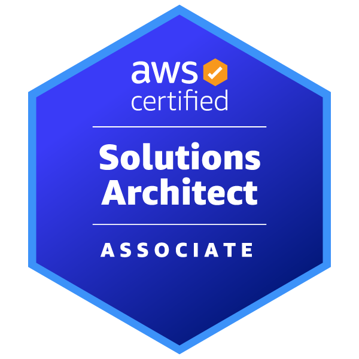
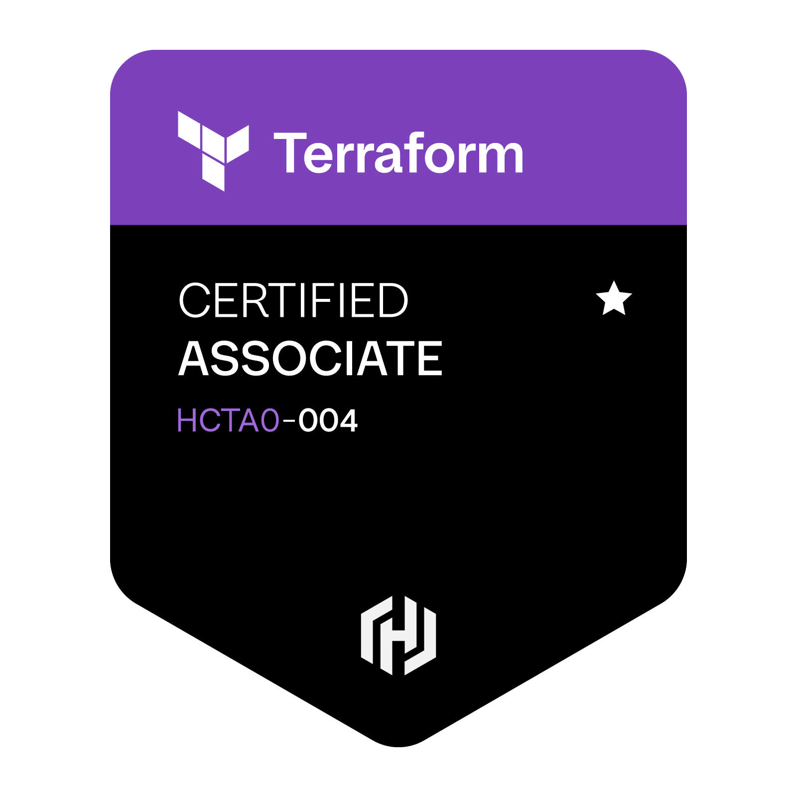

Hello, I'm
DevOps / SRE Engineer with 5+ years of experience supporting cloud infrastructure, Kubernetes platforms, CI/CD pipelines, automation, and production systems across enterprise retail and financial environments.
I hold a Bachelor's degree in Computer Science and started my career as a System Administrator, where I spent two years supporting Linux and Windows Server environments, networking, virtualization, backups, monitoring, and infrastructure operations.
After building a strong infrastructure foundation, I transitioned into DevOps / SRE and now have over 5 years of experience working across enterprise environments, including The Home Depot and Wells Fargo in retail and financial sectors.
My work focuses on cloud platforms, Kubernetes, CI/CD pipelines, Infrastructure as Code, monitoring, automation, and building reliable production systems using modern DevOps practices.
Location: Chicago, USA
Focus: AWS · Kubernetes · Terraform · CI/CD
Open to: DevOps / Cloud / SRE opportunities
Technical Skills
Cloud: AWS (EC2, VPC, IAM, RDS, S3, Route53, EKS, ECS, Lambda, CloudWatch)
Infrastructure as Code: Terraform, Ansible
Containers / Orchestration: Docker, Kubernetes, Helm, ArgoCD
CI/CD: Jenkins, GitHub Actions, GitLab CI
Monitoring & Logging: Prometheus, Grafana, ELK, CloudWatch
Programming: Python, Bash
Concepts: Microservices, High Availability, CI/CD, GitOps, HA/DR, RTO/RPO, DevSecOps
Operating Systems: Linux, Windows Server
Networking: TCP/IP, DNS, DHCP, NAT, HTTP/S, SSH, UDP
Infrastructure: Active Directory, NFS, Virtualization
Operations: Backup & Recovery, Incident Management, System Monitoring
Projects
Kafka Enterprise Orders
Microservices app with Kafka. Deployed using Docker and Kubernetes. Infrastructure managed with Terraform. CI/CD with GitHub Actions.
Tech: Kafka, K8s, Docker, Terraform
JumpToTech Microservices Platform
Full-stack microservices platform deployed on Kubernetes using GitOps and CI/CD automation. Includes frontend, API gateway, backend services, database, monitoring stack, and automated deployments.
Tech: Kubernetes, Docker, Jenkins, ArgoCD, FastAPI, Next.js, PostgreSQL, Prometheus, Grafana
Personal Site / Lab
This portfolio website hosted in AWS as a static site, used to test deployments, routing, and CloudFront caching.
Tech: HTML, CSS, JS, AWS S3 & CloudFront
Certifications


Contact
Email: jimkaraev@gmail.com
Phone: +1 312-945-6311
LinkedIn: linkedin.com/in/zheenbek-karaev
GitHub: github.com/juzonb1r